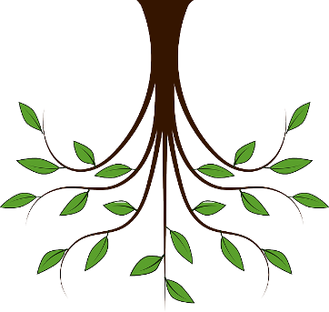
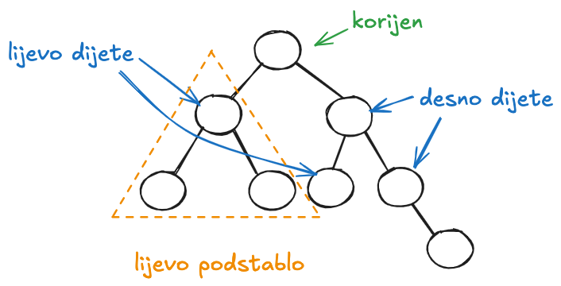
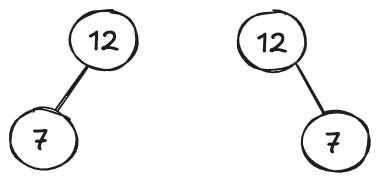
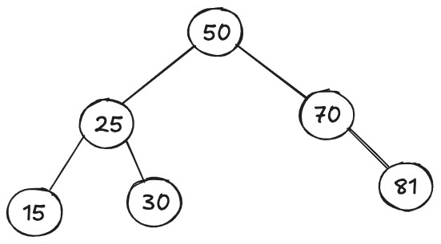
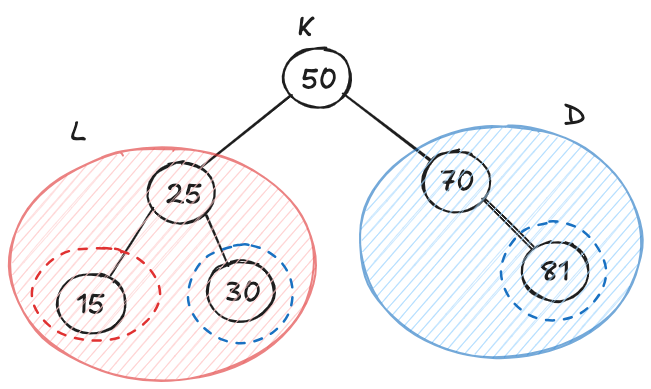
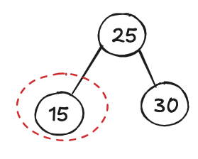

📌 Stabla
📌 Binarna uređena stabla za pretraživanje
📌 Operacije unosa i ispisa (obilaska) binarnog uređenog stabla
Osnovni pojmovi
Često moramo opisati grupu objekata iz stvarnog svijeta koje su međusobno povezane, a to
ne možemo napraviti linearnim strukturama koje smo radili do sad. Za takve situacije, pomažu razgranate strukture. Razgranatim strukturama podataka ovdje smatramo grafove i podvrste grafova (npr. stabla). Razgranata struktura stablo (eng. tree) sastoji se od čvorova (eng. nodes) koji mogu biti povezani s ostalim elementima. Stabla predstavljaju hijerarhijske strukture gdje je važno što je na kojoj razini, dok su grafovi općenitije strukture koje mogu predstavljati drugačije probleme (npr. mapa grada i sl.).
Stablo u programiranju ima:
- Korijen
- Listove
- Čvorove
- Veze
Vizualiziramo ga obrnuto u odnosu na prirodu jer korijen uvijek crtamo na vrhu.
| Stablo u programiranju |
|
 Stablo u prirodi
Stablo u prirodi
Korijen predstavlja čvor koji nema roditelja. List je čvor koji nema djece. Sve ostale čvorove (koji nisu ni korijen ni list) nazivamo unutarnjim čvorovima.
Putanja (eng. path) predstavlja niz čvorova povezanih bridovima (vezama) bez ponavljanja. Duljina putanje je broj bridova koji povezuju te čvorove. Ponekad nam je u zadacima lakše prebrojati čvorove koje smo prošli.
Binarna stabla
Binarno stablo je stablo u kojem čvorovi imaju najviše dvoje djece. Obzirom da postoji samo dvoje djece, onda ih zovemo lijevo i desno dijete. Ta djeca su korijeni lijevog i desnog podstabla. Neki čvorovi mogu imati samo lijevo ili samo desno dijete, a neki mogu biti bez djece, te se kao i kod općenitih stabala nazivaju listovi.

Kod binarnih stabala, važno je razlikovati lijevu i desnu stranu. Binarna stabla sa slike su potpuno različita:

Binarno stablo za pretraživanje (eng. Binary Search Tree, BST) ili uređeno binarno stablo predstavlja stablo u kojem je jasno definiran uređaj, odnosno način rasporeda elemenata u stablu, ukratko:
- Korijen je prvi čvor koji nema roditelja,
- Stablo može imati 0, 1 ili 2 djece,
- Čvor (dijete) s lijeve strane ima vrijednost koja je manja od vrijednosti roditelja
- Čvor (dijete) s desne strane ima vrijednost koja je veća od vrijednosti roditelja
Uređena binarna stabla mogu koristiti jedinstveni identifikacijski ključ u svakom čvoru. Važno svojstvo ključeva je da su usporedivi.
Čvorovi mogu sadržavati različite vrijednosti osim identifikacijskog ključa, ali ključ mora biti jedinstven kako bi mogli doći do traženog čvora.
Na slici vidimo primjer takvog stabla.

Prema tome, vrlo lako možemo doći do najmanjeg ili najvećeg ključa. Ako stablo nije prazno, najmanja vrijednost ključa nalazi se u krajnjem lijevom čvoru (ako postoji), a ako takav ne postoji onda se nalazi u korijenu. Analogno, ako stablo nije prazno, najveća vrijednost ključa nalazi se u krajnjem desnom čvoru, a ako takav ne postoji onda je u korijenu.
Osnovne operacije
Osnovne operacije u binarnom uređenom stablu su:
- Dodavanje elemenata,
- Traženje elemenata,
- Brisanje elemenata.
Dodavanje ili umetanje novog elementa u binarno uređeno stablo znači dodati novi element tako da stablo i dalje ostane uređeno. Prema tome, potrebno je pronaći poziciju na koju možemo smjestiti novi element.
Dodavanje obavljamo u dvije faze:
- Ako je stablo prazno, dodaj novi element na mjesto korijena.
- Ako stablo nije prazno, usporedi vrijednost ključa te ako je novi element manji, smjesti ga u lijevo podstablo, ako je veći u desno podstablo.
Gore nedostaje opis što se događa ako je novi ključ jednak već postojećem. Najjednostavnije je takve situacije ignorirati, ali često želimo znati da su se dogodile.
Iz gornjeg opisa dodavanje novih elemenata, možemo zaključiti kako je algoritam rekurzivan, no kod dodavanja nije nužno pisati rekurziju jer je često teže razumljiva početnicima pa ćemo češće u zadacima problem rješavati petljom.
Obilazak (eng. traversal) binarnog uređenog stabla je čest problem u programiranju. Ovdje ćemo koristiti jedan od tri načina obilaska koji kreću od korijena:
- In-order (Lijevo - Korijen - Desno) - algoritam najprije obilazi lijevo podstablo, zatim korijen pa onda desno podstablo,
- Pre-order (Korijen - Lijevo - Desno) - algoritam najprije obilazi korijen, zatim lijevo podstablo pa onda desno podstablo,
- Post-order (Lijevo - Desno - Korijen) - algoritam najprije obilazi lijevo postablo, zatim desno podstablo pa korijen.
Za primjer stabla sa slike:

U prvom koraku algoritam promatra lijevo podstablo:

Na njega primjenjujemo L-K-D: 15, 25, 30, čime je lijevo podstablo obrađeno.
Nakon što je gotovo, onda se ispisuje glavni korijen s prethodne slike: 50 i prelazimo na desno podstablo te kako s lijeve strane nema ništa, ispisujemo 70 i 81, odnosno sve skupa je:
15, 25, 30 50, 70, 81.
Pokušajte sami na papiru riješiti ostala dva obilaska na ovom primjeru!
Definiramo čvor binarnog uređenog stabla kao klasu koja sadrži polja (ili po potrebi svojstva):
- Vrijednost (informacije koje želimo spremiti)
- Ključ (podatak koji će biti jedinstven) - temelj za uređaj u stablu
- Reference na lijevo i desno dijete
Vrijednost i ključ se mogu poklopiti (ako bi primjerice spremali samo jedinstvene realne brojeve), ali to je jako jednostavan slučaj.
Klasu Cvor možemo i ne moramo pisati u zasebnoj datoteci:
Cvor.cs
class Cvor
{
public int broj; //jedinstveni ključ
public Cvor lijevo, desno;
public Cvor(int br)
{
this.broj = br;
this.lijevo = null;
this.desno = null;
}
}
U gornjoj implementaciji, imamo samo broj kao sadržaj. Napisan je i konstruktor koji prima vrijednost (odnosno broj).
Zadane vrijednosti za polja koja su objekti je null, no ne smeta nam ako to napišemo eksplicitno jer nam je tako jasnije.
Definiramo posebnu klasu pod nazivom BinarnoStablo. Klasa se sastoji od polja koje predstavlja korijen te metoda koje ćemo koristiti za različite operacije.
BinarnoStablo.cs
using System;
namespace bibStablo
{
class BinarnoStablo
{
public Cvor korijen;
public void Dodaj(int br)
{
}
public void Ispis()
{
}
}
}
Korijen je u gornjem slučaju public tako da ga možemo pozvati i iz glavnog programa, no bilo bi bolje da je zapravo private kako bi se rad s podacima kontrolirao isključivo pomoću metoda koje pripadaju klasi.
Dodavanje elemenata u BST
Dalje u tekstu ćemo BST kraće nazivati samo "binarno stablo".
Metodu za dodavanje elemenata u binarno stablo možemo pisati na dva načina:
- Pomoću petlje
- Pomoću rekurzije
Ideja je slična kao kod vezane liste:
- Ako je prazno, novi čvor spremi kao korijen
- Ako nije prazno, traži prvo slobodno mjesto lijevo ili desno (prema pravilima).
Metoda također može primati:
- Čvor
- Vrijednost
Povratna vrijednost metode može biti:
- Ništa (void) - ako nije potrebna povratna informacija,
- Bool - npr. true, je dodavanje bilo uspješno ili false ako nije,
- String - npr. poruka zašto dodavanje nije uspjelo ili s koje strane je dodan element,
- Int - koliko koraka je bilo potrebno za dodati element i sl.
Napisat ćemo metodu za dodavanje koja radi s petljom.
BinarnoStablo.cs
using System;
namespace bibStablo
{
class BinarnoStablo
{
public Cvor korijen;
public void Dodaj(int br)
{
Cvor novi = new Cvor(br);
// 1. ako je stablo prazno
if (korijen == null)
{
korijen = novi;
return;
}
// 2. ako nije prazno
Cvor temp = korijen;
while (true)
{
// provjeri sve tri mogućnosti
if (novi.broj < temp.broj)
{
// vidi je li lijevo prazno
if (temp.lijevo == null)
{
temp.lijevo = novi;
return; //gotovo
}
else
temp = temp.lijevo; // idi dalje
}
else if (novi.broj > temp.broj)
{
// vidi je li desno prazno
if (temp.desno == null)
{
temp.desno = novi;
return; //gotovo
}
else
temp = temp.desno; // idi dalje
}
else
{
// ako su jednaki
return;
}
}
}
}
}
U gornjem rješenju, petlja je beskonačna (uvjet true), ali je predviđeno da se petlja prestane izvršavati (pomoću naredbe break ili continue) kad se novi element uspješno smjesti ili ako novi element ima dupli ključ (u gornjem primjeru broj).
Primjer: ako su ključevi jednaki, ne mora se raditi ništa.
Možda se čini kako je lako uočiti beskonačnu petlju, ali u tom slučaju morate imati dobre testne podatke.
Ispis
Kako bi mogli testirati gornji program (metodu za dodavanje), potrebna nam je posebna metoda kojom ćemo ispisati sadržaj. Obzirom da ne znamo koliko na kojoj grani može biti elemenata, onda moramo obići cijelo stablo, a to ćemo napraviti rekurzivno koristeći pristup inorder.
BinarnoStablo.cs
public void Inorder(Cvor k)
{
if (k != null)
{
Inorder(k.lijevo);
Console.WriteLine(k.broj);
Inorder(k.desno);
}
}
Svaka rekurzija ima: osnovni slučaj i korak. U gornjem primjeru, za osnovni slučaj (kad je k jednak null) ne treba raditi ništa već se rekurzija samo završava. U koraku rekurzije, mora se pozvati ponovo ista metoda, ali tako da se početni problem približi osnovnom slučaju (u gornjem primjeru - nakon cijelog stabla pozivamo rekurziju na lijevom i desnom podstablu). Prema tome, smanjujemo stablo sve dok ne dođemo na null.
Primjena u glavnom programu:
Program.cs
using bibStablo;
namespace primjer;
class Program
{
static void Main(string[] args)
{
int[] niz = {50, 70, 25, 30, 15, 25, 81};
BinarnoStablo bs = new BinarnoStablo();
foreach (int br in niz)
{
bs.Dodaj(br);
}
bs.Inorder(bs.korijen);
}
}
Program će ispisati redom sve brojeve. Testni podaci sadrže i duplu vrijednost (25). Također, malo smeta što se u glavnom programu poziva metoda Inorder() kojoj moramo dati korijen kao parametar, a on već je dio klase. To je zato što smo izravno pozvali rekurzivnu metodu u glavnom programu.
Razmislite kako bi to promijenili tako da se pozove samo bs.Inorder() bez parametara!
🏠 Zadatak za domaći rad
Riješite problem dodavanja u binarno stablo tako da metoda Dodaj() vraća bool:
- True - ako je uspješno dodano
- False - ako je bio dupli broj
Kod unosa, ispisati u glavnom programu brojeve koji su bili duplikati:
Duplikat: 25
15
25
30
50
70
81
Za ispis smo koristili rekurziju, ali možemo i za dodavanje. Osnovna ideja je prolaziti na sličan način po stablu (lijevo ili desno) i tražiti praznu poziciju. Problem ćemo razdvojiti na dva slučaja:
- Ako je stablo prazno - ne mora ići u rekurziju,
- Ako nije prazno pozivamo rekurzivnu metodu.
BinarnoStablo.cs
public void Dodaj2(int br)
{
Cvor novi = new Cvor(br);
if (korijen == null)
korijen = novi;
else
DodajRek(korijen, novi);
}
Rekurzija mora imati informacije na kojem dijelu stabla se nalazi i što dodajemo pa u ovom primjeru ima dva parametra.
- Ako je novi broj manji, onda će provjeriti je li lijevo prazno te ga smjestiti, a u protivnom mora dalje na lijevo podstablo.
- Ako je novi broj veći, onda će provjeriti je li desno prazno te ga smjestiti, a u protivnom mora dalje na desno podstablo.
- Ako su jednaki, ne radi ništa
BinarnoStablo.cs
private void DodajRek(Cvor k, Cvor novi)
{
if (novi.broj < k.broj)
{
if (k.lijevo == null)
k.lijevo = novi;
else
DodajRek(k.lijevo, novi);
}
else if (novi.broj > k.broj)
{
if (k.desno == null)
k.desno = novi;
else
DodajRek(k.desno, novi);
}
else
{
// ništa
}
}
Ako gore ne napišemo ništa za slučaj kad su jednaki, rekurzija će završiti.
🎯 Sad opet pokušajte riješiti zadatak s prethodne stranice, ali primjenom rekurzije!
🏠 Zadatak za domaći rad
Riješite problem dodavanja u binarno stablo tako da metoda Dodaj() vraća string:
- Poruka gdje je spremljen broj (npr. 50-korijen, 70 desno, 25 lijevo, 25 duplikat!, ...)
- Poruka ako nije spremljen (npr. 25 duplikat)
Napomena: ne mora biti rekurzija.
Opis zadatka
Napisati konzolsku aplikaciju koja će učitati podatke iz datoteke brojevi1.txt i smjestiti ih u binarno stablo.
- Ispisati sadržaj stabla od najmanje do najveće vrijednosti.
- Ispisati sadržaj stabla na ostala 2 načina.

Opis zadatka
Nastavite rješavati u istom rješenju od prethodnog zadatka gdje je riješen unos podataka.
- Napisati metodu Trazi() koja prima cijeli broj kojeg treba pronaći.
- Metoda vraća čvor koji sadrži traženu vrijednost ili null ako ga nema.
- U glavnom programu korisnik unosi traženi broj, a program ispisuje je li pronađen.
🎯 Za one koji žele više
a) Napišite metodu TraziPut() koja za razliku od prethodnog zadatka, vraća string koji sadrži put do traženog čvora i sam čvor ili "nema" ako ga nema.
Primjer: za 489, ispisuje: "500, 253, 494, 489", za 11 → "nema"
b) Napišite metodu Udaljenost() koja vraća broj čvorova koje treba posjetiti do traženog čvora (brojati i sam čvor) ili 0 ako ga nema. Primjer: za 500 → put: 1, za 489 → put: 4, za 11 → 0.
Opis zadatka
Napisati program (konzolsku aplikaciju) koji će učitati u stablo slučajno odabrane brojeve iz intervala [10, 50].
- Korisnik upisuje koliko želi brojeva n,
- Paziti na ispravnost broja n! Koliki smije biti?
Ispisati brojeve iz stabla od najvećeg do najmanjeg:
- koristiti rekurziju za ispis
- neka se metoda zove IspisMaxMin
- za svaki dupli broj (npr. 11), ispisati poruku oblika: dupli broj: 11